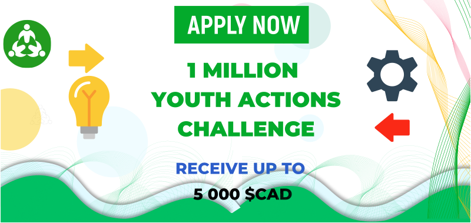

16
Jul
1 Million Youth Actions Challenge – Call for Proposals (Up to $5,000 CAD in funding)
Proposals are now accepted for the 1 Million Youth Actions Challenge (1MYAC): An initiative to stimulate young people around the world! Launched in September 2021 by the Swiss Agency for Development and Cooperation, 1MYAC is a great opportunity to promote youth engagement for the implementation of SDGs. The challenge aims at mobilizing youth from all over the world to implement concrete actions for a more sustainable future.
1MYAC focuses on the following four United Nation’s Sustainable Development Goals (SDGs) to address both climate change and the depletion of natural resources worldwide: SDG 6 on ‘clean water and sanitation’, SDG 12 on ‘responsible consumption and production’, SDG 13 on ‘climate action’ (climate change) and SDG 15 on ‘life on land’ (biodiversity).
The main objective of this call for projects is to support the implementation of youth-led initiatives related to clean water and sanitation, responsible consumption and production, climate action & biodiversity and to enhance the young leaders’ capacities as actors of change in the water and climate sector.
THEMES
Admissible projects must cover one or several of these themes:
- SDG 6: Clean water and sanitation: Initiatives to improve water quality, promote universal access to safe drinking water, sanitation and hygiene, and improve water use efficiency to mitigate water stress and ensure water security.
- SDG 12: Responsible consumption and production: Initiatives that promote resource and energy efficiency, circular economy such as recycling and upcycling, sustainable infrastructure, and waste and pollution reduction.
- SDG 13: Climate action: Initiatives that aim to help reduce gas emissions and improve adaptation to climate impact: such as reforestation, awareness, etc.
- SDG 15: Life on land: Initiatives that prevent and halt ecosystem degradation, protect critical biodiversity sites, and help reverse net habitat loss, like building a home for small animals or growing a community garden, etc.
GRANT
You have a brilliant idea to help your community tackle water and climate challenges? Submit your project and get a chance to receive up to $5,000 CAD in funding.
ELIGIBILITY
To be eligible, participants and their projects must correspond to the following rules:
- The project must be conceived, led, and implemented by a 1MYAC Ambassador between 18 and 35 years old; If you are not yet 1MYAC Ambassador;
- The project must include youth between 10 to 30 years old across all aspects of the project;
- The project must address at least one of the four SDG’s addressed by 1MYAC;
- The project must be submitted either in German, Spanish, French, or English;
- The project must be a a newly registered action on the 1MYAC platform, but can be an ongoing project not already registered.
The following criteria will be considered as an added value in the analysis of the project:
- Projects from low- and middle-income countries, projects led and/or benefitting disadvantaged people, projects developed by and for indigenous communities, projects led by young women and projects targeting women;
- Projects with a direct impact on vulnerable communities;
- Projects tackling socio-economic and environmental challenges;
- Project Leader demonstrates his ability to lead the project within their community.
Application
- If you are already a 1MYAC Ambassador, you’ve already completed the first step! You can go straight to step 2 and prepare a short video about your project. If you are not already a 1MYAC Ambassador, make sure to sign-up to join the 1MYAC family as an Ambassador. Click here to sign-up;
- Prepare a short project presentation video (max. 3 minutes)
- Upload your video on YouTube
- Visit the Youth for Water and Climate platform to submit your project online. Follow the Submit a Project steps and make sure to answer all questions!